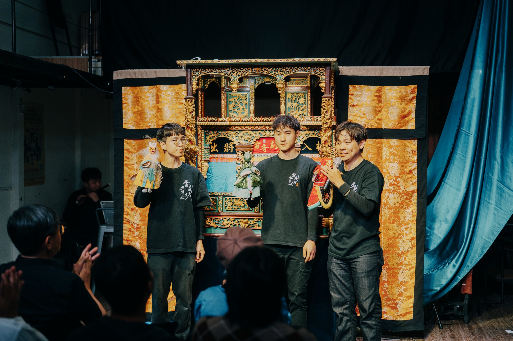

2026.11.03 · 大稻埕國際藝術節 · 思劇場 Thinkers’ Theater
《青瞑的龍蛇無青瞑》
以臺灣民間傳說為出發點，從青瞑龍與青瞑蛇的視角重新觀看傳說，讓傳統布袋戲在親子觀眾與當代劇場之間展開新的對話。
Activity Review
傳說換一個角度，故事就有了新的入口。
《青瞑的龍蛇無青瞑》從臺灣民間傳說出發，以布袋戲操偶、臺語口白與傳統後場重新觀看青瞑龍與青瞑蛇的故事。思劇場的近距離空間，讓戲偶細節、表演節奏與觀眾互動更直接地被看見。本場原訂 10 月 23 日演出，因颱風延期至 11 月 3 日。
- 活動
- 2026 大稻埕國際藝術節
- 節目
- 雷音劇坊《青瞑的龍蛇無青瞑》
- 日期
- 2026.11.03
- 地點
- 思劇場 Thinkers’ Theater
Creative Team
製作團隊
2026 大稻埕國際藝術節｜雷音劇坊《青瞑的龍蛇無青瞑》
- 劇團顧問
- 葉嘉中
- 偶戲顧問
- 黃僑偉
- 導演
- 徐宏愷（首演）
- 編劇
- 蘇恆毅
- 主演
- 陳建霖
- 演師
- 彭揚閔、李睿紳、馮寶儀
- 音樂設計／文場領奏
- 陳信宏
- 武場領奏
- 陳筱郁
- 揚琴
- 蔡睿恩
- 吹管
- 黃宣祖
- 鑼鈔
- 詹佳穎
- 後場領唱
- 林庭儀
- 整體造型設計
- 雷音劇坊
- 戲偶製作
- 雷音劇坊
- 原作平面設計
- 陳育軒
- 執行製作
- 張庭瑜
- 燈光執行
- 趙唯亦
- 行政統籌／活動主視覺
- 易芊
- 主辦單位
- 大稻埕國際藝術節工作室
- 演出單位
- 雷音劇坊
- 作品支持
- 國立傳統藝術中心
- 場地協力
- 新生一號劇團、思劇場 Thinkers’ Theater
Photo Archive
現場紀錄
攝影｜許尊凱（拍照的人平面攝影工作室） 照片提供｜大稻埕國際藝術節工作室
從台前演出、後台準備到觀眾互動，記錄這次在思劇場相遇的片刻。


